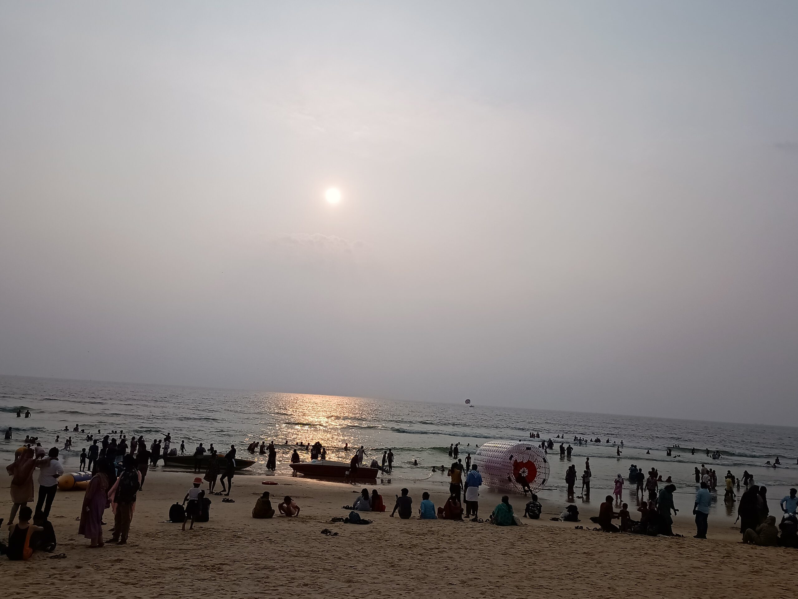
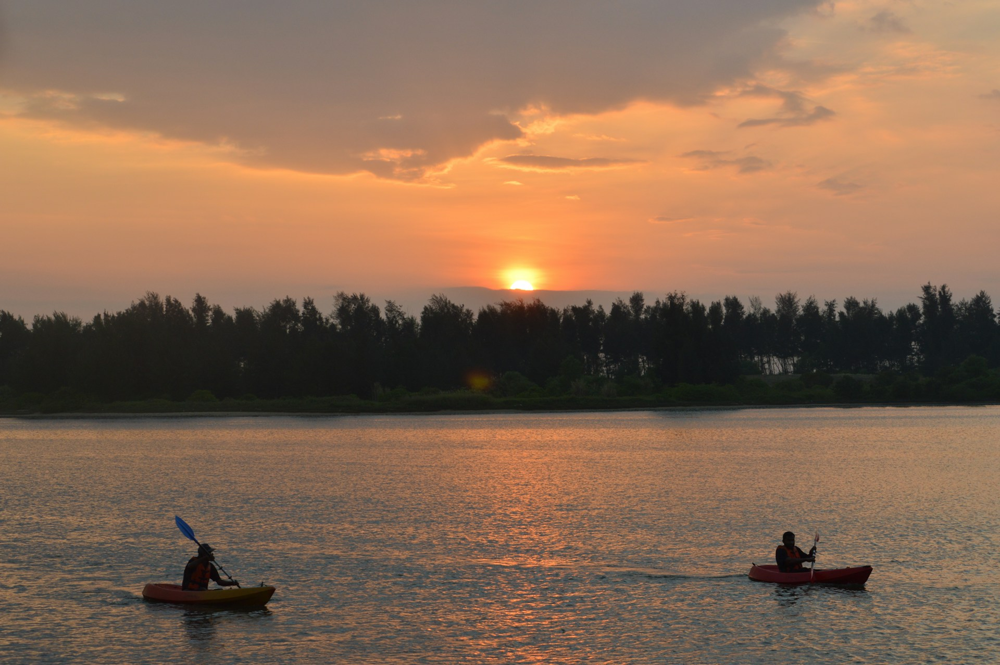
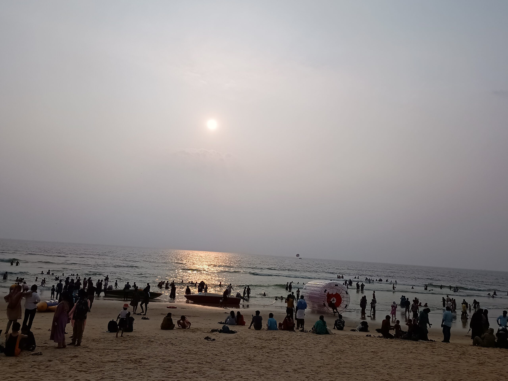

1. Panambur Beach
Famous for its clean sands and vibrant beach festivals, Panambur Beach is perfect for sunbathing, camel rides, and water sports.
Mangalore, located on the southwest coast of India, is a flourishing port city renowned for its scenic beaches, rich culture, and delectable cuisine. This city offers a blend of modernity and tradition, and is a gateway to the beautiful state of Karnataka.
Famous for its clean sands and vibrant beach festivals, Panambur Beach is perfect for sunbathing, camel rides, and water sports.
One of the oldest temples in South India, Kadri Manjunath is a must-see for those interested in religion, history, and traditional architecture.
Known for its stunning frescoes and artistic interiors, this chapel offers a serene experience for visitors and art lovers alike.
Quieter than Panambur, Tannirbhavi is ideal for long walks and picnics with family or friends.
Built by Tipu Sultan, this watchtower offers beautiful views of the city and the Gurupura river.
Mangalore is accessible by air, rail, and road. The Mangalore International Airport connects major Indian cities.
Major beaches have lifeguards, but always check local advisories before entering the water.